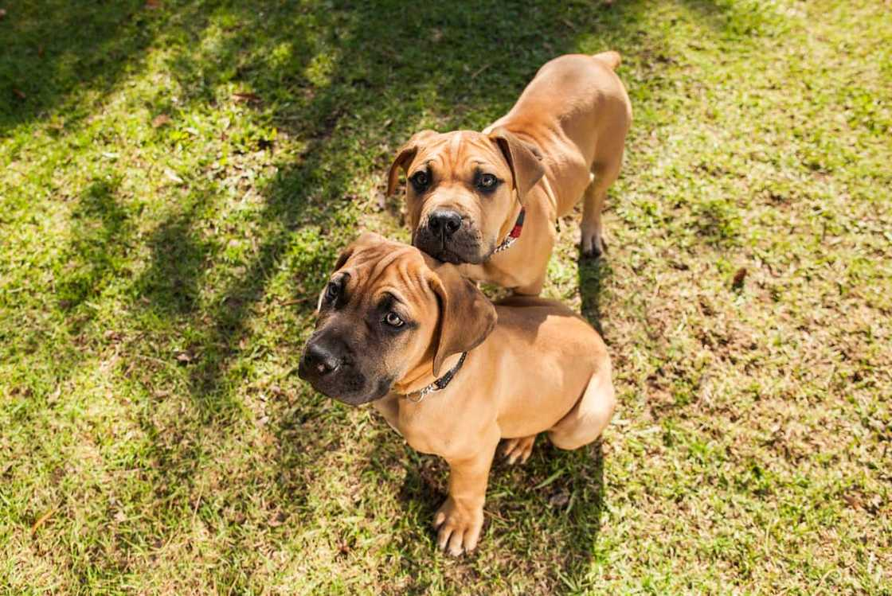

Boerboel
If you want a dog breed that is protective of its human children and is an excellent guardian, this is what you need. Although it can be overprotective and aggressive, it is also great at socialisation, needs minimal grooming and does not suffer from constant health concerns. Its around Ksh.10,000 to 120,000 to buy one dog.
Adopt Me